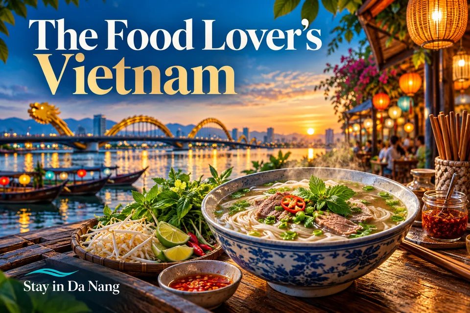

The Food Lover’s Vietnam · यात्रा सुझाव
वियतनाम यात्रा गाइड: यात्रा कार्यक्रम, होटल के इलाके और वास्तविक विरासत स्थल।

HD चित्र खोलें / डाउनलोड करें · PNG →WebP →


Planning idea · English
Try regional specialties and learn the stories behind them. A local food walk can turn dinner into a cultural experience. Ask about ingredients, portions and prices, especially for allergies. For food walks, confirm guide language, meeting point and included dishes.
यात्रा सुझाव
यह लेख वास्तविक स्थानों और सामान्य योजना की सलाह पर आधारित है, निजी अनुभव की समीक्षा या तत्काल बुकिंग ऑफर नहीं है। यात्रा से पहले आधिकारिक स्रोत या सेवा प्रदाता से प्रवेश नियम, मौसम, खुलने का समय, उपलब्धता और कीमत जाँचें।